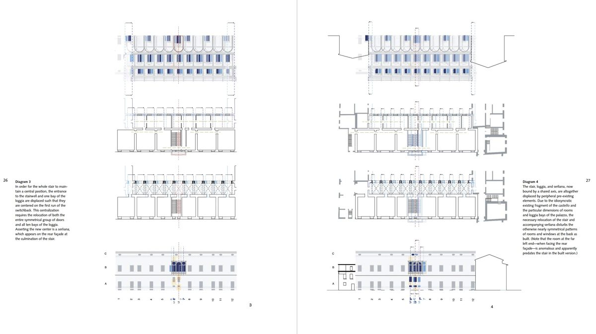

The Narrative Arc
Narrative in a portfolio is a design problem, not a writing task. It operates through the organization of projects, the sequencing of visuals, and the relationships between pages. A portfolio that simply displays work is not the same as one that actively guides the viewer's interpretation. The difference is narrative structure: how information is ordered, emphasized, and withheld.
We often describe portfolios as "working" or "not working" without being able to explain why. What feels intuitive is actually the result of deliberate narrative construction. The goal is to recognize these structural decisions and make them intentionally.
What Makes a Narrative Strong
Strong narratives are not accidental. They are the result of intentional design decisions.
1. A Clear Central Question or Idea (Focus)
A project clearly asks one guiding question, such as how housing can adapt to seasonal migration, rather than attempting to address multiple unrelated issues. The portfolio communicates a unifying design thesis that threads through individual projects.
2. An Intentional Sequence of Information (Structure)
The project begins with site conditions and the design problem, moves through concept and strategy, and only then presents plans, sections, and details. Information builds logically from context to resolution.
3. Selective Inclusion and Omission (Curation)
Only drawings that actively support the project's core idea are included, while secondary studies or weaker iterations are intentionally left out. Not every sketch, model, or iteration needs to appear. The choices you make reveal curatorial judgment.
4. A Consistent Point of View (Lens)
The project consistently frames itself as an exploration of spatial experience, material systems, or social impact, rather than shifting between unrelated agendas across pages. Language, tone, and visual approach remain coherent.
5. A Sense of Resolution or Clarity (Closure)
The project concludes with drawings or diagrams that clearly demonstrate what was resolved, learned, or clarified through the design process, even if the proposal remains speculative. Narrative does not require a perfect solution, but it does require a clear ending.
KEY INSIGHT: What makes a narrative strong is not complexity but clarity, achieved through deliberate choices about order, emphasis, and omission. This clarity is the result of deliberate narrative structure, something we can analyze, describe, and design.
How Narrative Gets Built
To intentionally design narrative in a portfolio, work in this order:
- Start with a clear project statement. Define the central question, intent, and scope. Writing clarifies intent.
- Translate intent into a narrative outline. Decide what comes first, what follows, and how the story unfolds. Structure gives images meaning.
- Organize images to support that outline. Select and sequence visuals so each one reinforces the narrative.
The project statement drives the narrative outline, and the narrative outline drives the image sequence. If you start by arranging images without a clear statement, you are decorating rather than communicating.

Analytical narrative sequence: progressive diagrams build spatial understanding across a spread
Common Narrative Failures
COMMON MISTAKE. The Greatest Hits Portfolio: Projects are selected for visual quality alone, with no attention to how they relate to each other or to the architect's broader design agenda. The result looks attractive but reads as unmemorable. Each project feels isolated, with no cumulative thesis.
The Process Dump: Too many sketches and iterations without editorial judgment. The portfolio becomes an indiscriminate record of everything made, rather than a curated narrative showing key decision points and design evolution.
The Beautiful Mute: Visually stunning renderings and graphics, but the portfolio fails to communicate design logic. You cannot understand why these formal moves were made or what problems they solve.
The Buried Lede: Your strongest work is hidden deep in the portfolio behind weaker projects. Your best project should appear early, establishing credibility and momentum.
The Academic Hedge: Overly theoretical language that obscures rather than clarifies the design work. The portfolio feels like an essay about architecture rather than a demonstration of architectural thinking through projects.
From Project Narrative to Portfolio Sequence
The principles above apply within individual projects. But the same logic governs the portfolio as a whole: the order of your projects, the transitions between them, and the cumulative story they tell. How to sequence projects across the full portfolio is covered in Section 6: Storyboarding & Visual Sequencing.